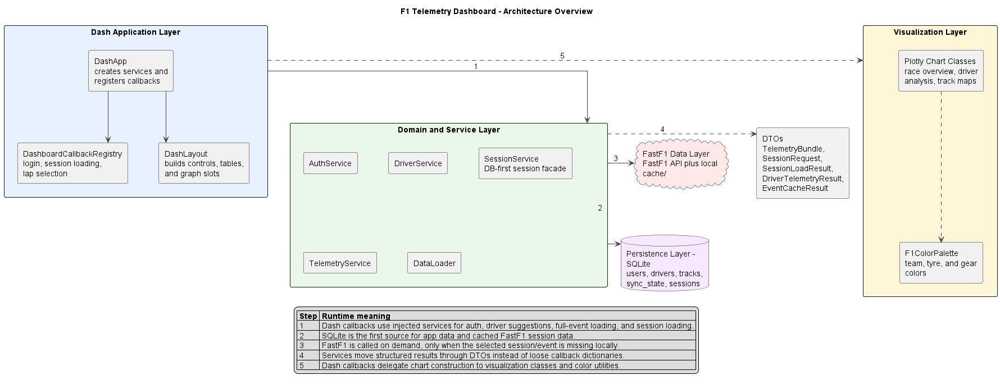
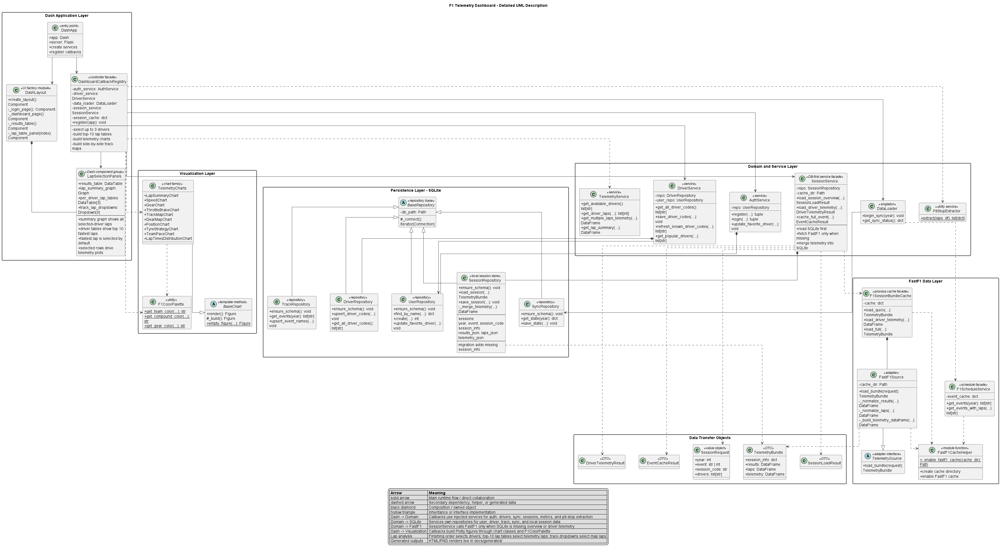
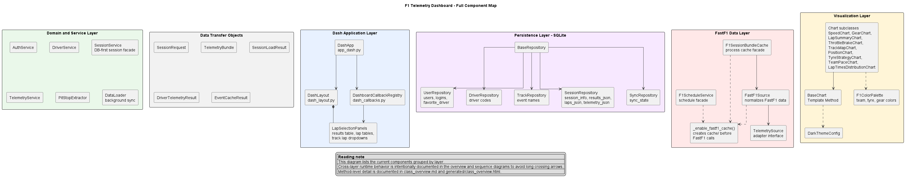
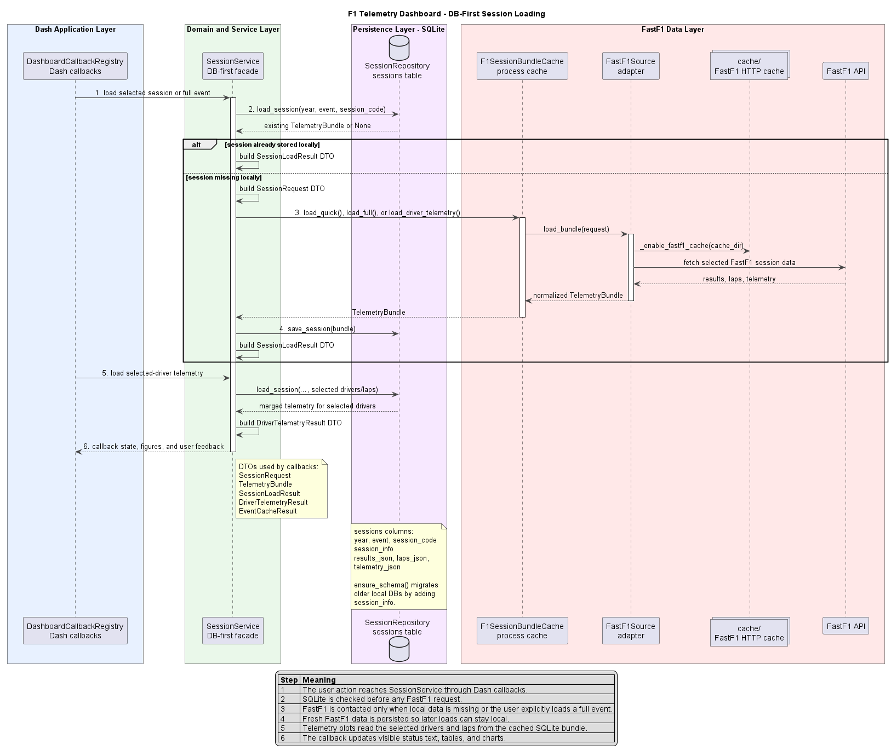
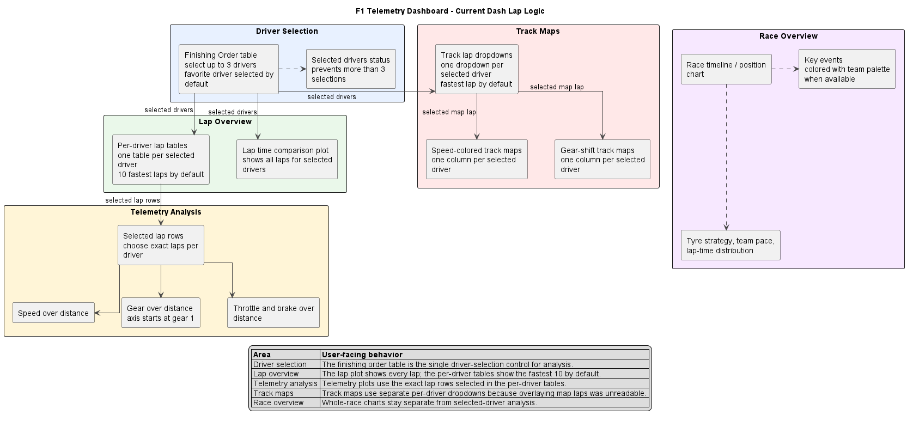

Architecture Overview
Layer-level runtime flow and the meaning of each cross-layer dependency.

Detailed UML Description
Detailed class-style diagram with the main application, service, repository, FastF1, DTO, and visualization classes.

Full Component Map
All current application, service, repository, FastF1, DTO, and visualization components grouped by layer.

DB-First Session Loading
How SessionService, SQLite repositories, FastF1, and DTOs cooperate.

Dash Lap Logic
How driver selection, lap tables, telemetry plots, and track maps are connected.
